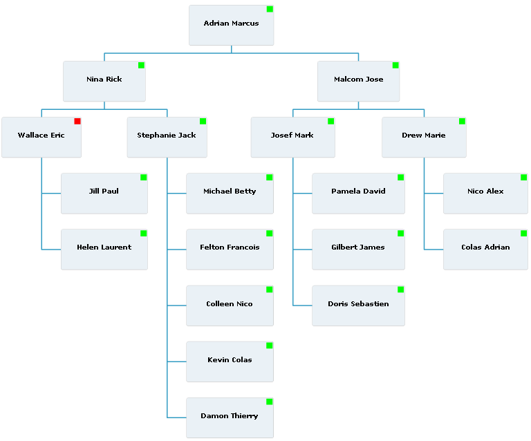

An organization chart is often used for corporate intranets
to represent employees and their managerial relationships visually.
Such relationships have different representations:
- Line
A direct relationship between superior
and subordinate.
- Lateral
A relationship between different departments
on the same hierarchical level.
- Staff
A relationship between a managerial
assistant and other areas. Assistants may be able to offer advice
to line managers. However, they have no authority over the actions
of line managers.
An IBM® ILOG Elixir organization chart can operate in
two modes:
- Local mode
To facilitate graphical navigation in
large employee databases, IBM
ILOG Elixir organization charts in local mode
display only a given employee, colleague, manager, and subordinate
hierarchical level. In this navigation mode, automated drill down
is activated to display only meaningful employees in relation to the
selected one. For more information, see
Local view mode.
- Global mode
An IBM
ILOG Elixir organization chart
also provides a global mode where all employees contained in your
data sets are displayed at once. For more information, see
Global view mode.
An example of a hierarchical organization chart is shown
in the following figure.

In the current version, organization charts are characterized
by their layout and the type of presentation box used, see
Organization chart item renderers for more information.